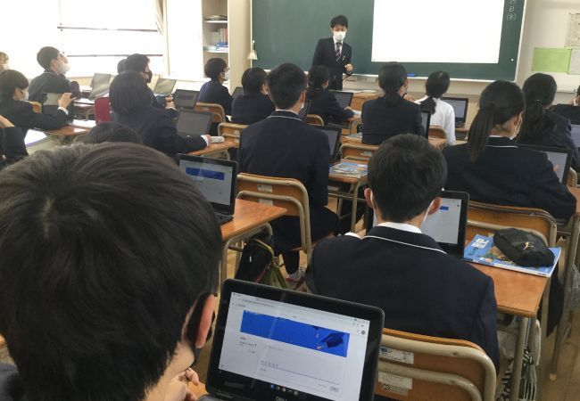
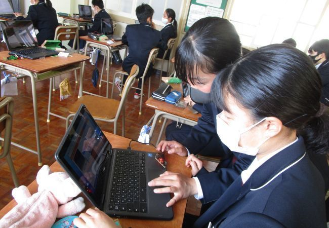

子ども一人一人の力を最大限に引き出す「GIGAスクール構想」
子ども一人一人の力を最大限に引き出す「GIGAスクール構想」
2021年05月14日
児童生徒向けの1人1台端末と、高速大容量の通信ネットワークを整備しようとする取り組みとして文部科学省が打ち出した「GIGAスクール構想」。全国で薦められていますが、気になる福岡の現状を聞きました。
GIGAスクール構想は鉛筆やノートと共に端末で未来の教育現場を担う
1人1台端末と高速大容量の通信ネットワークを整備する「GIGAスクール構想」のGIGAは「Global
and Innovation Gateway for
All」の略称で、「すべての人に、世界のさまざまな技術革新を利用できるようにする」という意味です。
全国の義務教育を受ける児童・生徒に、1人1台端末を導入することで、全生徒が主体的に情報の収集・整理・分析ができ、自分のペースで、より主体的な学習が可能になります。
従来は教科書や黒板を用いた授業方法がメインでしたが、学校でも家庭でも学習が可能に。構想では「すぐに」「どの教科でも」「誰でも」使える教育ICT（情報通信技術）環境の実現を掲げています。
1人1人のレベルに合わせたきめ細かな学習が実現

福岡市教育委員会
1人1台の学習者用端末や学校の通信ネットワークを高速大容量化することにより、すべての教室
の端末からインターネットに接続できるようになりました。
その結果、検索エンジン・サイトを活用した学習が可能になります。
また、教室だけでなく、家庭での学びを保障するためにオンライン授業や自宅学習ができ、クラウドによる様々なデジタル教材の活用で、1人1人の理解度に合わせた学習環境が整いました。
いろいろな生徒に対応した授業が可能に！
一斉学習
画像や動画を活用し大型画面に提示する分かりやすい学習で、生徒一人一人の反応を踏まえた双方向型の学習が実現します。
個別学習
学習履歴が確認でき、進み具合や理解度に応じた個別学習が可能になります。
協働学習
収集・整理・分析したデータや資料をもとに、意見交流し多様な考えに触れることができます。
福岡市教育委員会からのお知らせ

福岡市教育委員会
昨年12月からGIGAスクール始動 各家庭でもネットワーク環境を整備しましょう
福岡市教育委員会では、1人1台の端末整備が昨年11月末で完了、12月1日から福岡市立学校（小学校、中学校、特別支援学校、高等学校）でGIGAスクールが始動しました。
学校に整備した1人1台端末を活用した授業が始まっています。休校や学級閉鎖時には、学校で使い慣れたいつもと同じ端末を自宅に持ち帰ることで教室と同じ授業を受けるオンライン授業が可能になっています。
新型コロナウイルス感染症による不安で登校していない児童・生徒、長期欠席の児童・生徒、基礎疾患（本人もしくは家族）があるため登校していない児童・生徒などを対象にしたオンライン授業の際も、端末を家庭に持ち帰って活用しています。
また、1人1台端末を学校の授業だけでなく、日ごろから家庭に持ち帰って、AIドリルや学習動画などによる家庭学習でも活用することで、学びをより充実させ、子どもたちの力を最大限に伸ばしていくことを目指しています。
しかし、端末はWi-Fi
モデルのため、家庭にネットワークの環境がないと使えません。就学援助を受給される家庭に対しては、通信環境にかかる経費の一部について援助しますので、家庭の通信環境の整備も積極的にご検討くださいますようお願いいたします。
 Wechat pay
Wechat pay